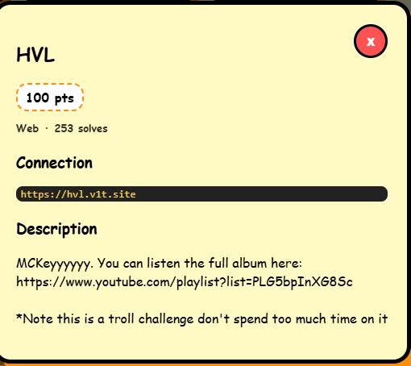
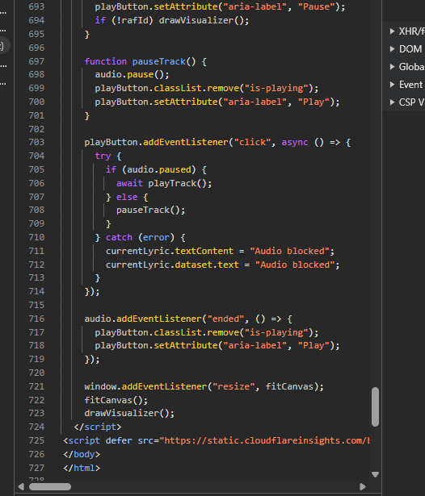
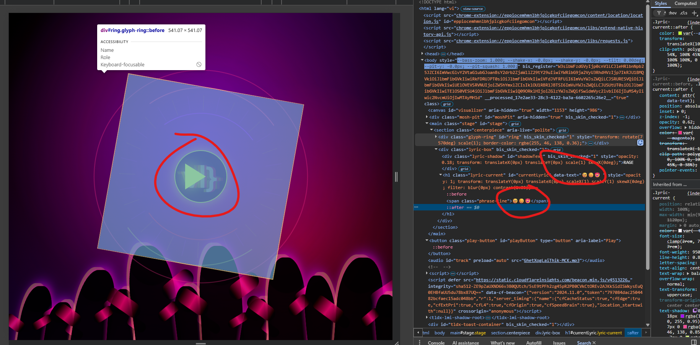
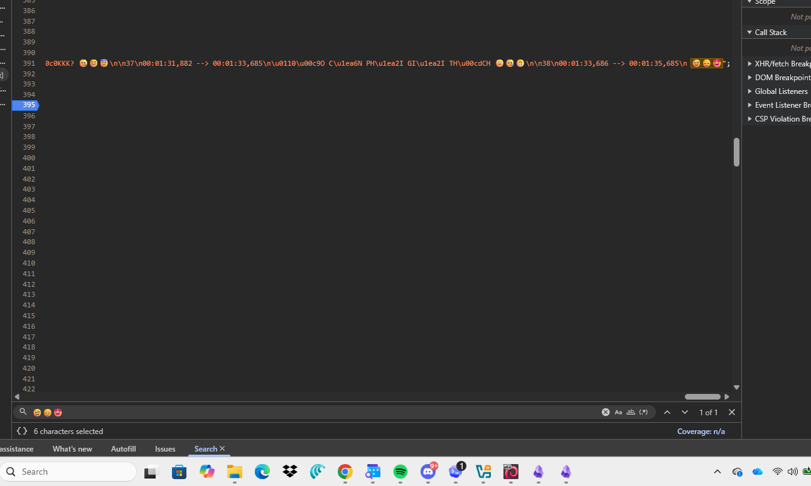
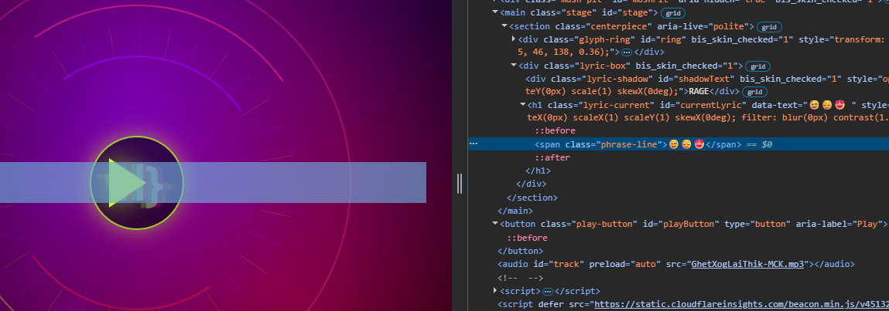
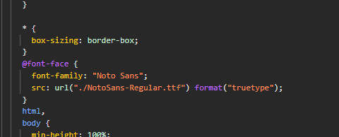
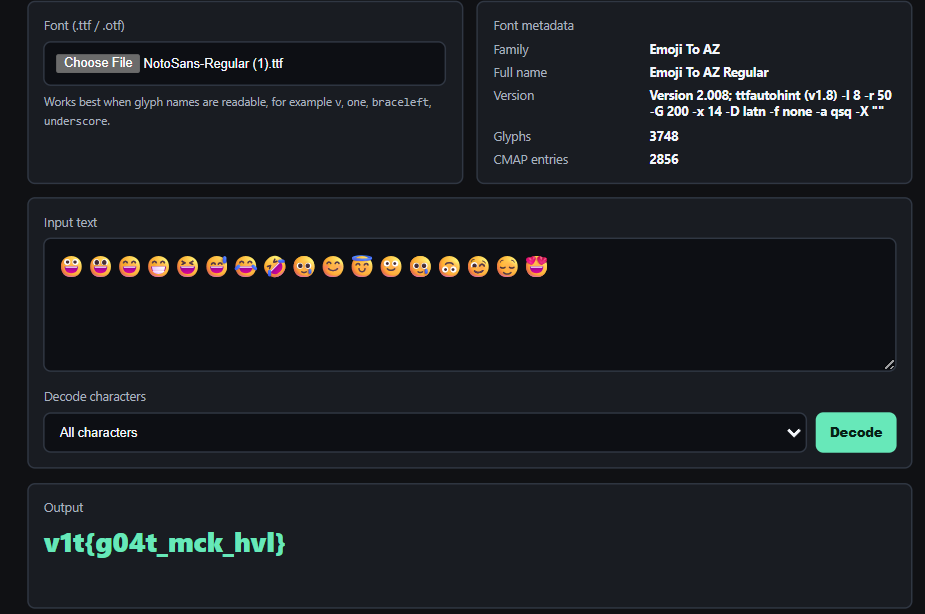

V1T 2026 / Web
HVL
A short writeup of a web challenge where the flag is hidden using a custom font. Although the HTML only contains emoji, the browser renders them as flag characters through custom glyph mapping.
Summary
The page source and the rendered output display completely different text. After inspecting the JavaScript, there was no decoding logic involved. The actual trick was a custom font disguised as NotoSans-Regular.ttf, whose internal metadata revealed its real name: Emoji To AZ Regular.
- VectorCustom font
- TableCMAP
- PayloadEmoji
- ResultGlyph mapping
Reading The Source
The first step was inspecting the page source and opening DevTools. The challenge uses a lyric visualizer, with the entire lyric already embedded in the client as a string. Since the payload was already available, the focus shifted from retrieving data to understanding how the browser rendered it.


Dynamic Analysis
While inspecting the DOM, I noticed that the HTML content did not match the text rendered on the page. At first, I expected the JavaScript to contain some sort of decoding routine. After tracing the relevant functions, however, nothing modified the original string. That shifted my attention away from JavaScript and toward the browser's rendering layer, specifically CSS and custom fonts.

Finding The Payload
The complete lyric could be extracted directly from the client-side data. The interesting part appeared near the end, where several cues consisted entirely of emoji. Once rendered, those emoji began to resemble a typical CTF flag format.


Custom Font
The stylesheet loads a local font named NotoSans-Regular.ttf. The filename is intentionally misleading: its internal metadata identifies it as Emoji To AZ Regular. Inspecting the font's CMAP table reveals that emoji code points are mapped to readable glyph names such as v, one, braceleft, and underscore.

@font-face rule provides the key clue: extract the custom font and inspect its mapping.Example glyph mappings:
- U+1F600v
- U+1F603one
- U+1F601braceleft
- U+1F60Dbraceright
Tooling
Since this technique is fairly repetitive, I built a small utility that lets me upload a font, paste the encoded text, and immediately inspect both the rendered output and the CMAP mapping. It is useful for CTF challenges that hide messages through custom font glyph substitution.
Simple web tool: ctf-font-decode.

Flag
v1t{g04t_mck_hvl}